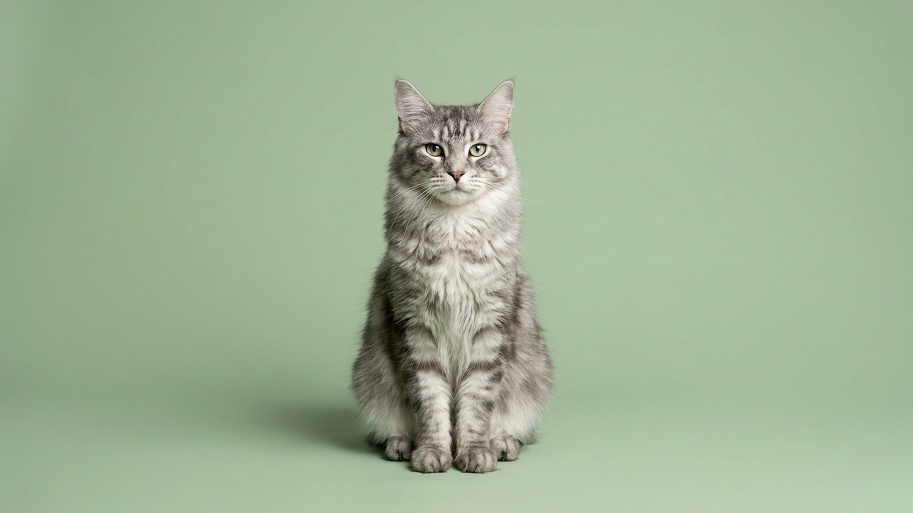

В 1955 году военные взяли немецкую овчарку и карпатского волка и поставили эксперимент. Результат через 30 лет признали породой. Чехословацкий влчак красив, умён и требователен настолько, что большинство владельцев не рассчитывает силы заранее. Ниже честный разбор: откуда порода, как с ней живут каждый день и кому она точно не подходит.
🐾 Ваш питомец — чехословацкий влчак?
Заведите профиль в AnimaLife: приложение запомнит породу, возраст и вес и будет подсказывать по уходу именно для неё. Вопросы AI-ветеринару — круглосуточно и бесплатно.
Завести профиль → Завести в MAX →
У вас iPhone? AnimaLife есть в App Store
Порода создана в 1955 году. Чехословацкие военные скрестили немецкую овчарку с карпатским волком. Через 30 лет результат официально признали породой. Это один из немногих случаев, когда гибрид волка с домашней собакой вышел за пределы экспериментального питомника и стал реальным компаньоном в обычных семьях.
Чехословацкий влчак несёт от 6,25 до 12,5% волчьей крови в зависимости от линии. Это влияет на характер ощутимо. Инстинкт стаи у влчака работает иначе, чем у большинства пород: он воспринимает хозяина и его семью как стаю и выстраивает внутри неё чёткую иерархию. Нет авторитетного лидера, влчак займёт это место сам. Занять его, а потом вернуть обратно сложно.
Внешность узнаваема: серо-жёлтый или серебристо-серый окрас, светлая маска вокруг морды, янтарные раскосые глаза, лёгкий пружинящий шаг. Взрослые кобели весят от 26 кг, суки от 20 кг.
Влчак крепко привязывается к своим. С детьми, которых знает с рождения, ладит хорошо. К посторонним настороженно, без агрессии, но и без интереса к знакомству. Он рабочая собака с высоким интеллектом и заметной самостоятельностью: задачу решает сам, если считает, что хозяин медлит.
Обучение влчака требует терпения. Команды выполняет только для хозяина, которого уважает. Уважение он не дарит просто так, его зарабатывают последовательностью и спокойствием. Силовое давление он игнорирует или воспринимает как вызов.
Нагрузка от 2 часов ежедневно, и это минимум. Его создавали для военных и поисковых операций: выносливость высокая, скорость тоже. Без достаточного движения он начинает разрушать пространство вокруг себя.
Социализацию начинают сразу после первых прививок. До 16 недель щенок должен видеть разных людей, слышать городские звуки, встречать других собак. Этот период не компенсируется позже никакими занятиями. Взрослый влчак без ранней социализации живёт в постоянном напряжении от мира, который кажется ему непредсказуемым.
С другими собаками уживается, особенно если рос вместе с ними с щенячьего возраста. С кошками осторожнее: охотничий инстинкт сохраняется. Держать влчака только в городской квартире без регулярных выездов за город порода не примет.
Густой двойной подшёрсток линяет интенсивно дважды в год. В этот период расчёсывают каждый день. В остальное время достаточно раза в неделю. Купают редко: шерсть обладает самоочищающимися свойствами. Когти, уши и зубы требуют регулярного ухода. Ветеринарный осмотр раз в год; вопросы по здоровью обсудите со специалистом, знакомым с породой.
🐾 У вас чехословацкий влчак?
AnimaLife соберёт уход под породу: к каким болезням есть склонность, что проверять по возрасту, чем кормить и когда пора к врачу. Бесплатно, прямо в мессенджере.
Собрать план ухода → Собрать в MAX →
У вас iPhone? AnimaLife есть в App Store
🐾 Понравился разбор?
Подпишитесь на канал — каждый день разбираем по одному тревожному симптому у кошек и собак: что в пределах нормы, а когда пора к врачу. Подпишитесь, чтобы не пропустить разбор, который может спасти здоровье вашего питомца.
Осознанный владелец с опытом в кинологии, готовый к ежедневной работе и стабильному режиму, получает собаку с редкой преданностью и сильным характером.
Материал носит информационный характер и не заменяет очную консультацию ветеринара.